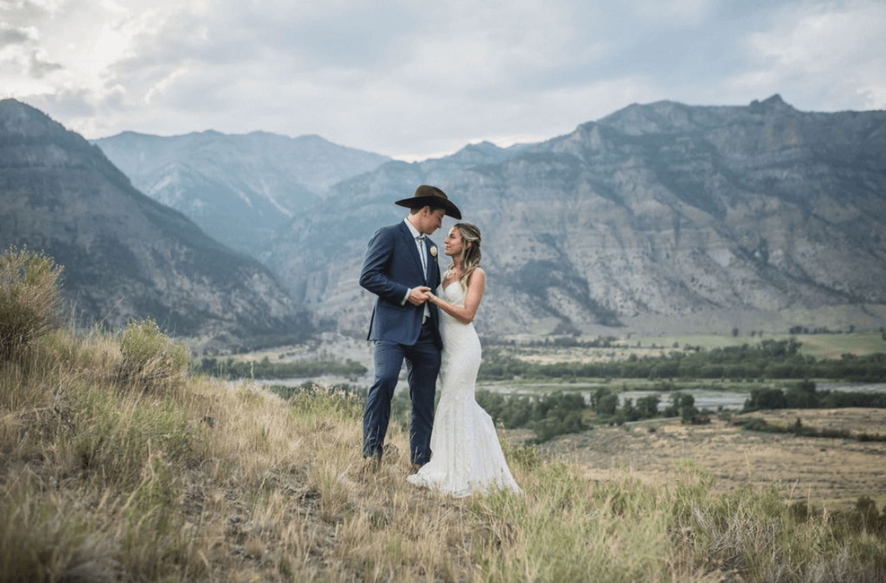

Home · The Ranch
The WYO Wild Horse Ranch.
An end of the road working ranch, 50 miles west of Cody, on the South Fork of the Shoshone. This is the basecamp for every trip we run.
Home · The Ranch
An end of the road working ranch, 50 miles west of Cody, on the South Fork of the Shoshone. This is the basecamp for every trip we run.
 The lodge at the ranch
The lodge at the ranch
The basecamp
The WYO Wild Horse Ranch sits 50 miles west of Cody, on the east side of the South Fork of the Shoshone River. It is the kind of place where the pavement gives way to gravel, the gravel gives way to dirt, and the dirt finally stops at our gate. From here, there is nothing but wilderness.
The ranch carries more than 4 miles of private river access. It is a real working horse ranch first, and a comfortable place to land second. We did not want one without the other.
 Over a century on this ground
Over a century on this ground
History
The ranch as it stands today was established in 2018, when Chris and Rick Trizano bought the neighboring Flying H Ranch, homesteaded on July 1, 1916, and the historic Lazy Bar F Ranch, homesteaded that same year.
The Lazy Bar F was homesteaded in 1916 by Max Wilde, who ran it as a summer dude ranch and hunting outfit from 1924 to 1962. Over those years it drew some well known names to this stretch of the South Fork.
At the ranch
You spend your days in some of the wildest country in the lower 48. At night you come back to a real bed, a hot shower, and a saloon with your name already in the story.
 South Fork of the Shoshone
Every trip starts here
South Fork of the Shoshone
Every trip starts here
The starting line
When you book a wilderness elk hunt or a summer pack trip with us, the ranch is where it all begins. You arrive here, you sort your gear here, and the horses leave from here. When the trip is over, this is where you come back to.
Our fishing trips are based out of the ranch as well, with daily runs to the water and a comfortable place to return to each evening. Whatever brings you out, the WYO Wild Horse Ranch is home base.

Weddings and retreatsBeyond the season
The same things that make the ranch a fine basecamp make it a rare setting for a gathering. We host customizable weddings and corporate retreats, built around what you have in mind, with the rustic western character of a real working ranch and the comfort of luxury accommodations.
The lodge, the cabins, the saloon, and the river are all part of it. Tell us what you are planning and we will work out the details with you.
Come see the ranch
Whether you are after elk, trout, a pack trip, or a place to gather, reach out and we will help you sort dates and rates.